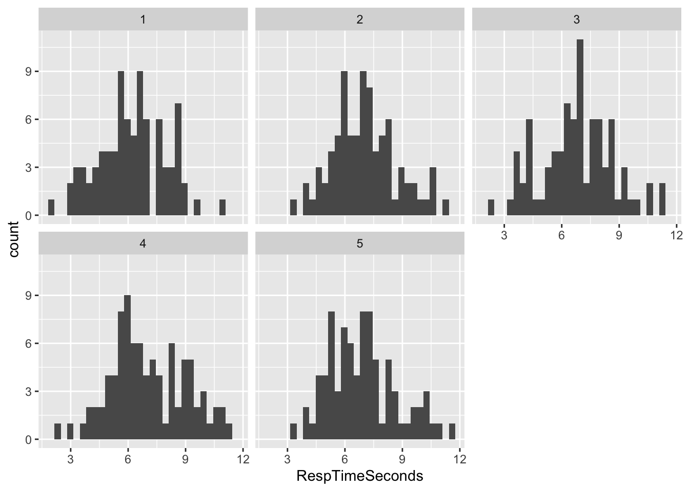
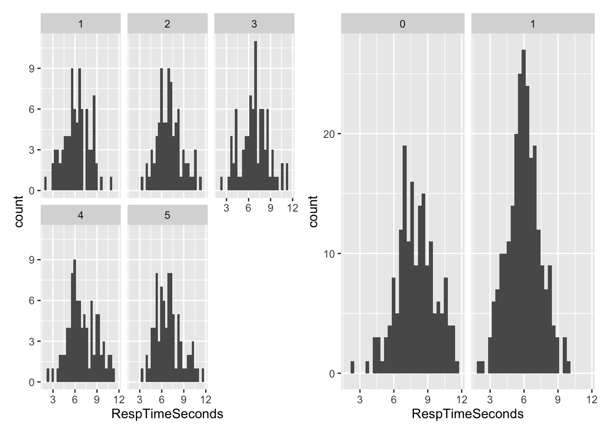
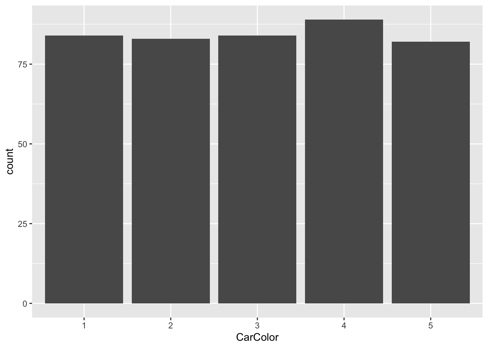
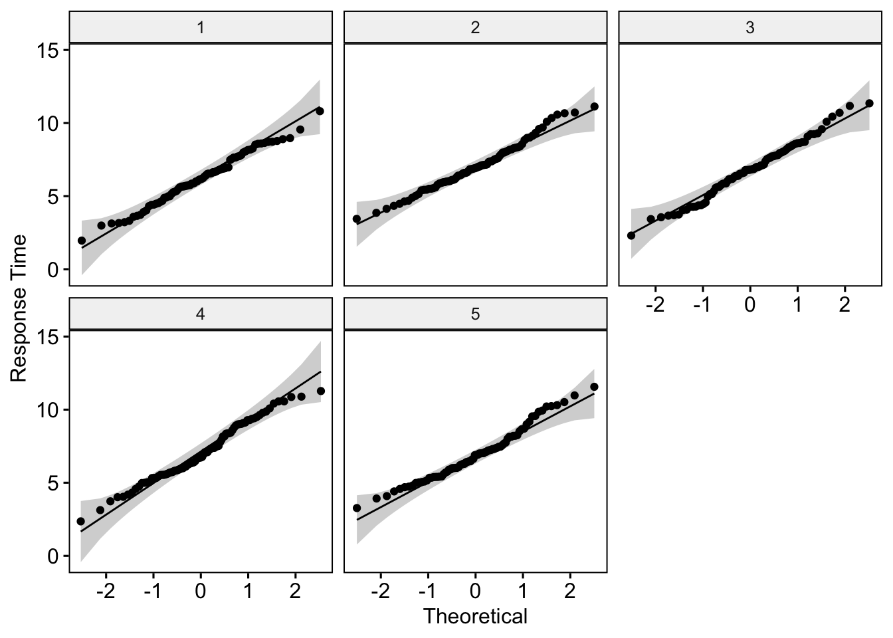

library(tidyverse) #for data cleaning
library(car) #for MANOVA
library(rstatix) #tidy stats
library(ggpubr) #for creating some plotsquestion2
packages
read in the data
car_raw <- read_csv("car_data.csv")Rows: 422 Columns: 4
── Column specification ────────────────────────────────────────────────────────
Delimiter: ","
dbl (4): v_gender, CarColor, Blink_or_Honk, RespTimeSeconds
ℹ Use `spec()` to retrieve the full column specification for this data.
ℹ Specify the column types or set `show_col_types = FALSE` to quiet this message.preview the data
head(car_raw)# A tibble: 6 × 4
v_gender CarColor Blink_or_Honk RespTimeSeconds
<dbl> <dbl> <dbl> <dbl>
1 0 5 0 11.6
2 0 4 1 11.3
3 0 5 1 10.2
4 0 5 0 11.0
5 1 5 1 8.70
6 0 4 1 10.6 summary statistics
summary(car_raw) v_gender CarColor Blink_or_Honk RespTimeSeconds
Min. :0.0000 Min. :1.000 Min. :0.0000 Min. : 1.958
1st Qu.:0.0000 1st Qu.:2.000 1st Qu.:0.0000 1st Qu.: 5.601
Median :1.0000 Median :3.000 Median :0.0000 Median : 6.716
Mean :0.5782 Mean :3.005 Mean :0.2512 Mean : 6.809
3rd Qu.:1.0000 3rd Qu.:4.000 3rd Qu.:0.7500 3rd Qu.: 8.049
Max. :1.0000 Max. :5.000 Max. :1.0000 Max. :11.563 are there any NA or Missing values? – no
sum(is.na(car_raw))[1] 0anyNA(car_raw)[1] FALSEconverting variables to appropriate formats
## converting variables to appropriate formats
## the below code converts the 3 variables from numeric to factors
car_raw <- car_raw %>%
mutate(v_gender = as.factor(v_gender),
Blink_or_Honk = as.factor(Blink_or_Honk),
CarColor = as.factor(CarColor))let’s look at the distributions of the variables
Response Time (in seconds) – appears normally distributed
# Response Time
# appears normally distributed
ggplot(car_raw, aes(x = RespTimeSeconds)) +
geom_histogram()
Car Color – equal group sizes
## Car Color
## group sizes look equal
table(car_raw$CarColor)
1 2 3 4 5
84 83 84 89 82 ##let's visualize that
ggplot(car_raw, aes(x = CarColor)) +
geom_bar()
Gender of Driver – 178 female, 244 male
ggplot(car_raw, aes(x = v_gender)) +
geom_bar()
table(car_raw$v_gender)
0 1
178 244 # 0 == female
# 1 == maleList of MANOVA assumptions:
- Adequate sample size
- Independence of the observations
- Absense of univariate or multivariate outliers
- Univariate and Multivariate normality
- Absence of multicollinearity
- Linearity between outcome variables
- Homogeneity of variances
- Homogeneity of variance-covariance matrices
Let’s test each assumption below
Assumption 1 / Adequate Sample Size : Satisfied
car_raw %>%
group_by(CarColor) %>%
summarise(N = n())# A tibble: 5 × 2
CarColor N
<fct> <int>
1 1 84
2 2 83
3 3 84
4 4 89
5 5 82car_raw %>%
group_by(v_gender) %>%
summarise(N = n())# A tibble: 2 × 2
v_gender N
<fct> <int>
1 0 178
2 1 244Assumption 1 states that number of observations in each group should be greater than the number of outcome variables. This assumption is clearly met in the data (see above tables).
Assumption 2 / Independence of Observations : Satisfied
Each row is an independent observation, so this assumption is satisfied.
Assumption 3 / Absense of outliers : Satisfied
Test for univariate outliers : Box Plot Method
Response Time Variable
car_raw %>%
group_by(CarColor) %>%
identify_outliers(RespTimeSeconds)# A tibble: 1 × 6
CarColor v_gender Blink_or_Honk RespTimeSeconds is.outlier is.extreme
<fct> <fct> <fct> <dbl> <lgl> <lgl>
1 5 0 0 11.6 TRUE FALSE This univariate outlier test identified one outlier, but there results show that it is considered “not extreme.” As a result, I think it is fine to leave this “outlier” in the dataset, but I will report results with and without this outlier.
Test for multivariate outliers : Mahalanobis Distance
car_raw %>%
group_by(CarColor) %>%
mahalanobis_distance() %>%
filter(is.outlier == TRUE) %>%
as.data.frame()[1] RespTimeSeconds mahal.dist is.outlier
<0 rows> (or 0-length row.names)According to the Mahalanobis Distance test, there appears to be no multivariate outliers in this dataset.
Assumption 4 / Univariate and Multivariate Normality : Satisfied
Shapiro-Wilks Test for Univariate Normality
Grouped by Car Color
car_raw %>%
group_by(CarColor) %>%
shapiro_test(RespTimeSeconds) # A tibble: 5 × 4
CarColor variable statistic p
<fct> <chr> <dbl> <dbl>
1 1 RespTimeSeconds 0.991 0.849
2 2 RespTimeSeconds 0.983 0.363
3 3 RespTimeSeconds 0.989 0.705
4 4 RespTimeSeconds 0.981 0.230
5 5 RespTimeSeconds 0.973 0.0798Grouped by gender of Driver
car_raw %>%
group_by(v_gender) %>%
shapiro_test(RespTimeSeconds) # A tibble: 2 × 4
v_gender variable statistic p
<fct> <chr> <dbl> <dbl>
1 0 RespTimeSeconds 0.990 0.236
2 1 RespTimeSeconds 0.996 0.773According to the Shapiro-Wilks Test, Response Time is normally distributed for each group (p > 0.05 for each group).
Here are some QQ plots to visualize this:
ggqqplot(car_raw, "RespTimeSeconds", facet.by = "CarColor",
ylab = "Response Time")
Shapiro test for multivariate normality
car_raw %>%
select(RespTimeSeconds) %>%
mshapiro_test()# A tibble: 1 × 2
statistic p.value
<dbl> <dbl>
1 0.993 0.0509The shapiro test is right at 0.051, which indicates that it is not significant, and we can assume multivariate normality.
Assumption 5 / Absense of Multicollinearity : Satisfied
We have two outcome variables: Response Time and Driver’s Reaction (Blink or Honk). Since Driver’s Reaction is a binary variable, we cannot correlate it with a continuous variable (Response Time). So we don’t have to worry about multicollinearity in this case.